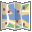

The You Are Theme A theme for who you are
The You Are Theme is a WordPress theme framework in development. You can learn more about the origins of this theme here as well as get information about the classic YouAre Theme. Currently, as this project evolves, so will this site. Check back regularly for more updates.
 Roadmap
Currently, the goal is to get the original YouAre theme compatible with the latest version of WordPress, which is currently 3.7.1. Additionally, work is in progress to get it working with Bootstrap, make it plugin independent and after that, time to take this theme in a new direction. All of this work should be completed by end of November 2013.
 Multilingual
Multilingual
Currently, the You Are Theme is currently available only in English. However, You Are will eventually be available in French, German and Italian.